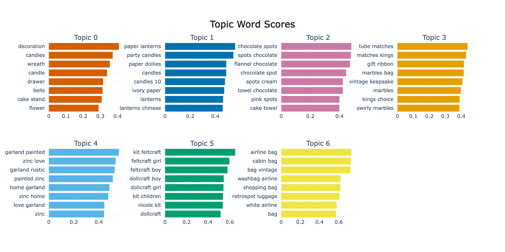

4.1 顧客セグメンテーション
日本語版について
このページは英語版 Marketing Science in Python のAI翻訳です。英語版を正本とし、差異がある場合は英語版を優先してください。コード、Notebook、画像内の文字は英語のままです。 英語版を読む
セグメンテーションのプロジェクトでは、チームがそのままキャンペーンに使えるものを作ります。成果物は、CRMや広告プラットフォームへ直接つながる segment_id と、各セグメントについて、その人たちは誰か、なぜ重要か、チームはどのような行動を取るべきかを示す簡潔な概要です。
セグメンテーションは一つの手法ではありません。デシル、RFM、K-Means、埋め込みベースのクラスタリングは、それぞれ異なる問いに答えます。その問いは、セグメントが支えるべき意思決定から生まれます。誰に維持予算を配分するか、どのメッセージを誰へ送るか、どの商品の物語を語るか、といった意思決定です。
問いに応じてセグメンテーションを選ぶ
意思決定を表の行に対応させます。
| 問い | 手法 | 入力 | 出力 |
|---|---|---|---|
| 今、より注目すべき顧客は誰か？ | デシル／RFM | 取引ログ | 価値階層またはR/F/Mスコア |
| 価値階層を超えて、どのような行動パターンがあるか？ | K-Means | 数値の行動特徴量 | 行動セグメントラベル |
| 顧客は実際に何を購入しているか？ | 埋め込みベースのクラスタリング | 商品説明から作る顧客ドキュメント | キーワード特徴を持つ、意味に基づくセグメント |
これらは一つのパイプラインの3段階ではなく、3つのレンズです。後の行が前の行のセグメントを精緻化するわけではありません。別の問いに答えており、ときには別のデータを使います。意思決定を変えうる最も単純な行から始め、現在のレンズでは同じに見える2人の顧客が異なる扱いを受けるべき場合にだけ、下の行へ進みます。この章では、最初の2行を一つの食料品小売企業、Dunnhumbyの「The Complete Journey」データセット（2,500世帯、2年間）で構築し、3行目は商品テキストがこの手法に適したギフト小売企業で構築します。
行動を先に、プロフィールは後で
行動変数は、最終購入からの期間、頻度、支出、購入カテゴリー、商品の幅、返品、値引きへの依存など、顧客が何をするかを表します。プロフィール変数は、年齢、所得、世帯構成、地域、ロイヤルティ階層、チャネル嗜好など、顧客が誰であるか、どこで接触できるかを表します。セグメントは行動の上に作ります。「30代の男性」「高所得者」といったラベルは、実際に何を購入したかに比べて、次の購入をはるかに予測できません。プロフィール変数は後から取り入れ、各セグメントを描き、どこで、どのように接触するかを選ぶために使います。
価値階層：デシルとRFM
最も速いセグメンテーションは順位づけです。デシル分析は、売上に基づいて顧客を同じ人数の10群へ分けます。食料品データは、よく見られる集中を示します。上位2デシルが売上の53%を占めます。

デシルは価値がどこにあるかを示します。各顧客にどれだけの注意を向けるかが意思決定なら、必要なのはこれです。顧客がなぜ異なるのか、どのメッセージが効くのかについては何も語りません。
RFMは、休眠した高額購入者、新しく頻繁に購入する顧客など、ダイレクトマーケティングのチームがすでに使っている言葉で、価値にエンゲージメントを加えます。
| 変数 | 定義 | 良い方向 |
|---|---|---|
| Recency (R) | 顧客の最後の購入からの日数 | 低い方が良い |
| Frequency (F) | 観察期間内の購入回数 | 高い方が良い |
| Monetary (M) | 観察期間内の総支出 | 高い方が良い |
各変数を五分位でスコアリングして組み合わせると、昨日購入した高額購入者と、1年間沈黙している高額購入者が分かれます。組み合わせたスコアは最大125セルになるため、同じ扱いを受けるセルは統合します。CLVの章で使うライブラリのPyMC-Marketingは、rfm_segments() の1回の呼び出しでこのスコアリングを行います。
デシルとRFMは、顧客がどれだけ、どれほど最近購入するかを測りますが、どのように購入するかは測りません。同じRFMスコアを持つ2人の顧客も、大きく異なる行動を取ることがあります。一人は多くのカテゴリーで定価商品を購入し、もう一人は単一カテゴリーの値引き商品だけを購入します。
K-Meansによる行動セグメント
この2人を分けるには、どのように買い物をするかを記述します。K-Meansは古典的なクラスタリングアルゴリズムですが、今でもこの用途にうまく機能します。6〜10個の行動変数から始めます。最終購入からの期間、頻度、支出に加え、平均注文金額、バスケットサイズ、カテゴリーの幅、値引き比率、返品率を追加します。支出が支配的にならないよう、StandardScalerで正規化します。
スケーリング前に、歪んだ変数を対数変換します。支出、頻度、最終購入からの期間、バスケットサイズは強く右に歪んでおり、StandardScalerは中心化と再スケーリングだけを行うため、長い裾は残ります。生の特徴量のままK-Meansへ入力すると、最初の分割を高額購入者と少額購入者の切り分けに使い、ほぼ価値階層を再現します。歪んだ特徴量へ log1p を適用すると（単純なルールとして、歪度が約1を超えるものを変換）、裾が圧縮され、クラスタは支出水準ではなく購買パターンで顧客を分けます。食料品データでは、K-Meansが3つの価値階層へ縮退するか、顧客基盤を均衡した5つの行動群へ分けるかの違いになります。
Kは診断指標とチームの判断の両方で決めます。エルボー法は範囲を絞りますが、数を一つに決めることはほとんどありません。顧客データで最も鋭い折れ曲がりはK=3にあることが多く、それはデシルとRFMですでに捉えた価値階層を再現するだけです。実用的な範囲の4〜8まで進め、行動可能性で決めます。マーケティングチームが異なる扱いをするセグメントを持つKを選びます。

食料品データでは、K=5にすると、支出水準だけでなく購買パターンでもセグメントが分かれます。図 3 はその当てはめの背後にあるプロフィールです。行はセグメント、列は行動特徴量で、母集団に対するセグメント平均で色づけしています。

表 3 は、そのヒートマップに対する分析者の読み取りであり、Notebookが読者へ残している手順です。構成比とプロフィール平均はNotebookから得ています（支出、来店回数、部門数は、セグメント内で平均した2年間の合計です）。名前と行動は分析者のものです。
| セグメント | 構成比 | プロフィール | 行動 |
|---|---|---|---|
| 高額ロイヤル層 | 25% | 支出$7,300、来店209回、17部門 | VIP維持施策 |
| 頻繁な少額購入層 | 23% | 支出$3,228、来店157回、注文$24 | バスケットを拡大 |
| ときどき高額購入する層 | 22% | 支出$1,938、来店56回、注文$38 | 低コストのナーチャリング |
| 値引き志向層 | 19% | 支出$1,087、値引き比率19%、狭い商品範囲 | 利益のガードレールを設けたオファーのみ |
| 休眠層 | 11% | 支出$334、最終購入は17週間前 | 安価な再活性化を一度行い、その後は停止 |
セグメント名は略称で、マーケティングチームが使うのはプロフィール列と行動列です。以下の行動可能性の確認のため、この表をマーケティングチームへ渡します。
商品の意味が重要なとき
数値の特徴量は、顧客がどのように買い物をするかを表しますが、何を買うかは表しません。意思決定がカテゴリーマーケティング、クロスセル、クリエイティブに関わるとき、シグナルは商品そのものにあるため、商品テキストが必要です。したがってこの節は、K-Meansの次の手順ではなく別の経路であり、別のデータで動きます。UCI Online Retail IIデータセットは、英国のギフト小売企業から得た約100万件の取引を含み、埋め込みモデルが読み取れる自由記述の商品説明を持っています。
各顧客の購入履歴をテキストとして扱います。購入した商品の説明を一つの文字列（顧客ドキュメント）へ連結し、埋め込みモデルでその文字列を密なベクトルへ変換します。この埋め込み空間では、誕生日用キャンドルとパーティー用の皿の距離は短く、アンティークのティーポットはどちらからも離れています。そのため、ベクトルをクラスタリングすると、支出額ではなく購入内容で顧客がグループ化されます。たとえば次のようなドキュメントです。
red retrospot cake stand, party bunting, paper cups, birthday candles, cake cases
数値特徴量では、この顧客は購入頻度が高く支出も多い層に入ります。埋め込みでは、パーティー用品を買うほかの顧客の近くに配置されます。ドキュメントの構築は、取引ログのグループ化と連結です。
# Keep each customer's top-N products by revenue, then join the descriptions
prod_rev = (
df.groupby(["CustomerID", "Description"])["Revenue"].sum()
.reset_index()
.sort_values(["CustomerID", "Revenue"], ascending=[True, False])
)
top_products = prod_rev.groupby("CustomerID").head(TOP_N)
customer_docs = (
top_products.groupby("CustomerID")["Description"]
.apply(lambda d: ", ".join(d))
.reset_index(name="doc")
)購入履歴全体ではなく各顧客の上位商品を残し、すべてのセグメントに現れる「Postage」のような一般的な商品を除外し、一度の高額購入の重みに上限を設けます。これらの判断は、埋め込みモデルの選択よりも重要です。
BERTopicは、残りのパイプラインを1回の呼び出しで実行します。ローカルの文埋め込みモデルが各ドキュメントをベクトルへ変換し、BERTopicがベクトルをクラスタリングして、各クラスタの特徴的なキーワードを抽出します。
from bertopic import BERTopic
from sentence_transformers import SentenceTransformer
embedding_model = SentenceTransformer("all-MiniLM-L6-v2") # local, lightweight
embeddings = embedding_model.encode(customer_docs["doc"].tolist())
topic_model = BERTopic(embedding_model=embedding_model)
topics, probs = topic_model.fit_transform(
customer_docs["doc"].tolist(), embeddings=embeddings
)
図 5 はBERTopicが見つけた7つのトピックを示しており、キーワードがニッチをそのまま表しています。パーティー用キャンドルとランタン、チョコレート柄のケーキ用品、フェルトクラフトのキット、航空会社風のバッグです。

キーワードの特徴が示さないのは、顧客基盤がそれらにどう分布しているかであり、このカタログではそれが発見事項です。幅広いトピック（装飾、キャンドル、リース）は、HDBSCANが未割り当てとした顧客を戻すと、顧客の92%を占めます。6つのニッチを合わせても約8%です。Notebookは幅広いトピックをK-Meansで6つの下位セグメントへ分けますが、後の期間で再当てはめしても同じセグメントは再現されません。調整Rand指数はゼロ近くで、同じ顧客に対するRFMベースのK-Meansの約0.14と対照的です。LLMがつけた12の名前のうち9つは、同じホームデコアのテーマの変奏です。このセグメンテーションは発見、つまりカタログが何を誰に売っているかの記述として読み、CRMの segment_id は行動セグメンテーションに置いたままにします。
キーワードは、LLMによる命名支援に対する防御でもあります。無作為なものを含め、どのクラスタでもLLMへ渡して名前とペルソナを求めれば、洗練された説得力のある説明が返ります。2つの安全策があります。
- LLMの説明より先に上位キーワードを読みます。自分で明確なテーマを見つけられなければ、その名前はデータに裏づけられていません。
- マーケティングチームと名前をテストします。2つのセグメントが同じキャンペーンを受け取るなら、その意思決定にとって両者を分ける価値はほとんどありません。
セグメンテーションは優れているか？
次の3つをこの順で確認します。行動可能性、安定性、規模です。
行動可能性が最も重要です。マーケティングチームへセグメントのプロフィールを見せ、セグメントの各組について、異なるメッセージ、チャネル、オファー、頻度を使うかを確認します。使わないのであれば、クラスタリングの指標が良くても、そのセグメンテーションは行動可能ではありません。通常の原因は、すべてが平均的なセグメントです。隣のセグメントと統合するか、変数選択を見直します。
2つ目は安定性です。重複しない2つの期間でセグメンテーションを再実行し、顧客の大半が同じセグメントに入ることを確認します。調整Rand指数（ARI）がこれを数値化します。食料品データでは、Notebookはクラスタではなく価値の順位を確認します。各年で世帯を売上五分位に置き、どこへ移るかを追います。

上位と下位の五分位はおおむねそのまま残り（70%と61%）、中央の3群は約40%しか残らないため、顧客基盤の中央に基づくキャンペーンには最も余裕が必要です。これは価値の順位がどれだけ安定しているかを示すもので、5つのセグメントがどれだけ安定しているかではありません。segment_id がキャンペーンを動かす前に実行すべき確認は、2番目の期間でK-Meansを再当てはめすることです。
3つ目は規模です。各セグメントは施策を実施できる十分な大きさが必要ですが、普遍的な下限はありません。幅広いターゲティングでは顧客基盤の約10%が目安になることが多い一方、本当に価値の高いニッチは意図的な例外にできます。
セグメントからsegment_idへ
プロジェクトから出ていく出力は、顧客1人につき1行です。付属Notebookは2,500行を segment_assignments.csv へ書き出します。以下はそのうち3行で、CLVの章はこのファイルを結合して各セグメントに価値をつけます。
| household_key | decile | km_segment | Segment |
|---|---|---|---|
| 1 | D3 | 0 | 頻繁な少額購入層 |
| 2 | D6 | 3 | ときどき高額購入する層 |
| 3 | D5 | 4 | 値引き志向層 |
各セグメントの概要をファイルの隣に置き、ファイルをバージョン管理します。キャンペーンの間に静かに変わる所属は、ないより悪いものです。セグメントは顧客間の違いを表しますが、あるメッセージがそのうちの一つに効くことを示すわけではありません。施策を選んだら、テストします。A/Bテストの設計の手法は、ほかのキャンペーンと同じようにセグメントキャンペーンにも当てはまります。
付属Notebook： sec4.1_traditional_segmentation.ipynb は、Dunnhumbyデータでデシル、RFM、K-Means、エクスポートを再現します。GitHubで見る
sec4.1_semantic_segmentation.ipynb は、UCI Online Retail IIで顧客ドキュメント、BERTopicの当てはめ、安定性の確認、LLMによる命名を再現します。GitHubで見る
要点
- セグメンテーションは、それが支える意思決定に応じて選ぶ。デシルとRFMは価値を順位づけし、K-Meansは行動グループを見つけ、埋め込みは顧客が何を買うかを捉える。後の手法は別の問いに答えるのであって、前の手法のセグメントを精緻化するのではない。
- セグメントは行動から作り、最初に行動可能性、次に安定性と規模を検証する。2つのセグメントが同じキャンペーンを受けるなら統合する。
- LLMは無作為なものを含め、どのクラスタにも説得力のある名前をつけるため、ラベルを信頼する前に上位キーワードを自分で読む。